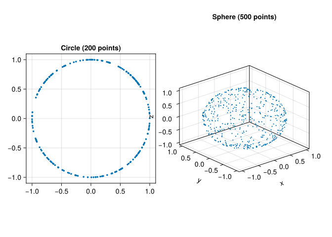
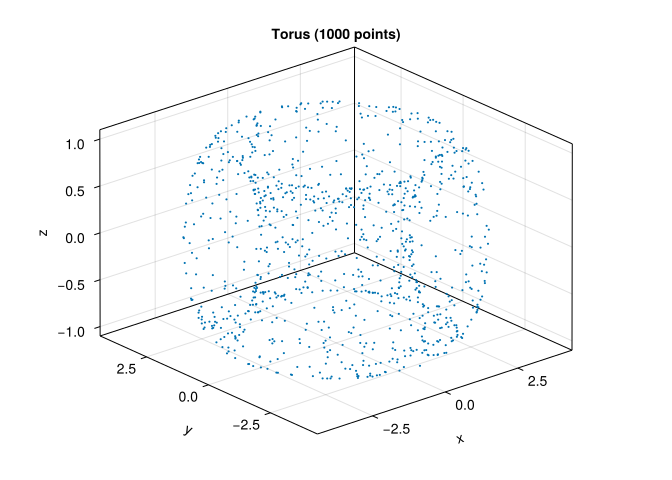
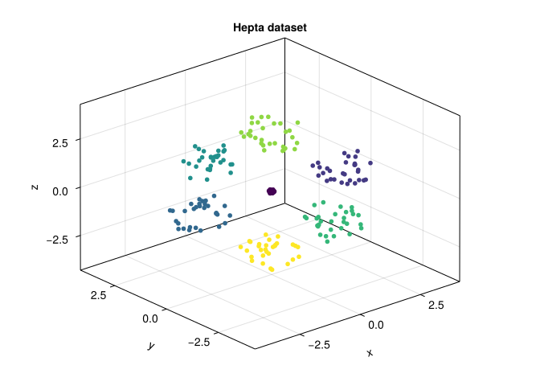
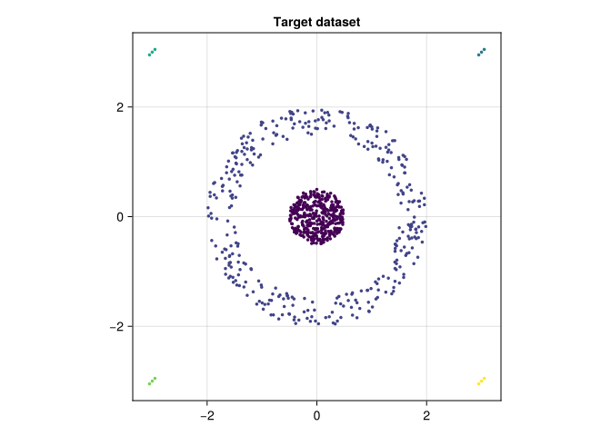
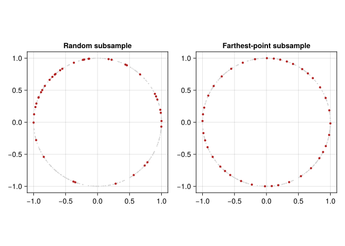
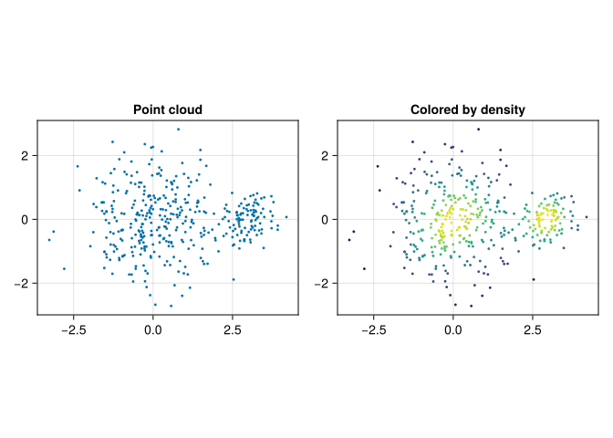

using CairoMakie
using MetricSpaces
using MetricSpaces.Datasets
using Random, Statistics
Random.seed!(2026)TaskLocalRNG()“To see a World in a Grain of Sand
And a Heaven in a Wild Flower,
Hold Infinity in the palm of your hand
And Eternity in an hour.”
— William Blake, in “Auguries of Innocence”
Before we can apply topological methods to data, we need to understand what “data” looks like from a geometric perspective. In TDA, data typically comes as a point cloud — a finite set of points in some metric space. This chapter covers the essential tools for working with point clouds: loading and generating them, measuring distances, estimating density, and visualizing structure.
Definition 5.1 A point cloud is a finite collection of observations \(X = \{x_1, \ldots, x_n\}\) in a metric space. Often each \(x_i \in \mathbb{R}^p\), but a matrix of distances between objects can be enough. A proposed dissimilarity makes the distinct locations into a finite metric space only if it satisfies the metric axioms below. Repeated observations can share a location; their multiplicity still matters for density estimation.
Point clouds appear everywhere:
Throughout this book, the conceptual convention is still the same as before: one point per column, one coordinate per row. In the local JuliaTDA stack, point clouds are represented by EuclideanSpace objects from MetricSpaces.jl. If your data already comes as a d \times n matrix, EuclideanSpace(M) converts it. When you want a matrix back for plotting or inspection, use as_matrix(X).
Synthetic datasets are useful because we know their geometry in advance. The MetricSpaces.Datasets module provides convenient generators for standard shapes:
using CairoMakie
using MetricSpaces
using MetricSpaces.Datasets
using Random, Statistics
Random.seed!(2026)TaskLocalRNG()circle = sphere(200, dim = 2)
sphere3d = sphere(500, dim = 3)
circle_mat = as_matrix(circle)
sphere_mat = as_matrix(sphere3d)
fig = Figure(size = (800, 400))
ax1 = Axis(fig[1, 1], title = "Circle (200 points)", aspect = DataAspect())
scatter!(ax1, circle_mat[1, :], circle_mat[2, :], markersize = 5)
ax2 = Axis3(fig[1, 2], title = "Sphere (500 points)")
scatter!(ax2, sphere_mat[1, :], sphere_mat[2, :], sphere_mat[3, :], markersize = 3)
fig┌ Warning: Found `resolution` in the theme when creating a `Scene`. The `resolution` keyword for `Scene`s and `Figure`s has been deprecated. Use `Figure(; size = ...` or `Scene(; size = ...)` instead, which better reflects that this is a unitless size and not a pixel resolution. The key could also come from `set_theme!` calls or related theming functions. └ @ Makie ~/.julia/packages/Makie/UjJJY/src/scenes.jl:238

torus_cloud = torus(1000)
torus_mat = as_matrix(torus_cloud)
fig = Figure()
ax = Axis3(fig[1, 1], title = "Torus (1000 points)")
scatter!(ax, torus_mat[1, :], torus_mat[2, :], torus_mat[3, :], markersize = 3)
fig┌ Warning: Found `resolution` in the theme when creating a `Scene`. The `resolution` keyword for `Scene`s and `Figure`s has been deprecated. Use `Figure(; size = ...` or `Scene(; size = ...)` instead, which better reflects that this is a unitless size and not a pixel resolution. The key could also come from `set_theme!` calls or related theming functions. └ @ Makie ~/.julia/packages/Makie/UjJJY/src/scenes.jl:238

The clustering datasets/ folder contains synthetic FCPS benchmark datasets designed to challenge clustering algorithms (Ultsch and Lötsch 2020). They have known labels, which let us examine errors instead of merely admiring a scatter plot. The Mapper chapter uses real iris measurements.
using DelimitedFiles
hepta_raw = readdlm("clustering datasets/Hepta.csv", ',', Any)
hepta = EuclideanSpace(permutedims(Float64.(hepta_raw[2:end, 2:end])))
hepta_labels = Int.(hepta_raw[2:end, 1])
hepta_mat = as_matrix(hepta)
fig = Figure()
ax = Axis3(fig[1, 1], title = "Hepta dataset")
scatter!(ax, hepta_mat[1, :], hepta_mat[2, :], hepta_mat[3, :], color = hepta_labels, markersize = 8)
fig┌ Warning: Found `resolution` in the theme when creating a `Scene`. The `resolution` keyword for `Scene`s and `Figure`s has been deprecated. Use `Figure(; size = ...` or `Scene(; size = ...)` instead, which better reflects that this is a unitless size and not a pixel resolution. The key could also come from `set_theme!` calls or related theming functions. └ @ Makie ~/.julia/packages/Makie/UjJJY/src/scenes.jl:238

target_raw = readdlm("clustering datasets/Target.csv", ',', Any)
target = EuclideanSpace(permutedims(Float64.(target_raw[2:end, 2:end])))
target_labels = Int.(target_raw[2:end, 1])
target_mat = as_matrix(target)
fig = Figure()
ax = Axis(fig[1, 1], title = "Target dataset", aspect = DataAspect())
scatter!(ax, target_mat[1, :], target_mat[2, :], color = target_labels, markersize = 5)
fig┌ Warning: Found `resolution` in the theme when creating a `Scene`. The `resolution` keyword for `Scene`s and `Figure`s has been deprecated. Use `Figure(; size = ...` or `Scene(; size = ...)` instead, which better reflects that this is a unitless size and not a pixel resolution. The key could also come from `set_theme!` calls or related theming functions. └ @ Makie ~/.julia/packages/Makie/UjJJY/src/scenes.jl:238

The choice of distance function profoundly affects any analysis. The same finite set of points can look very different depending on which notion of distance we put on it.
Definition 5.2 A metric on a set \(X\) is a function \(d : X \times X \to \mathbb{R}\) satisfying:
MetricSpaces.jl exports several common dissimilarities. Euclidean, city-block, and Chebyshev are metrics; the usual cosine dissimilarity is not:
x = [1.0, 2.0, 3.0]
y = [4.0, 5.0, 6.0]
println("Euclidean: ", dist_euclidean(x, y))
println("Cityblock: ", dist_cityblock(x, y))
println("Chebyshev: ", dist_chebyshev(x, y))
println("Cosine: ", dist_cosine(x, y))Euclidean: 5.196152422706632
Cityblock: 9.0
Chebyshev: 3.0
Cosine: 0.025368153802923787Cosine dissimilarity can assign zero to distinct positive multiples of a vector and can violate the triangle inequality. It is useful when direction matters, but do not apply a theorem for metric spaces without checking its assumptions. Angular distance between normalized nonzero vectors is a metric on the unit sphere. On the original unnormalized observations it identifies vectors with the same direction.
a, b, c = [1.0, 0.0], [1.0, 1.0], [0.0, 1.0]
println("Cosine triangle: ", dist_cosine(a, c), " versus ",
dist_cosine(a, b) + dist_cosine(b, c))Cosine triangle: 1.0 versus 0.5857864376269051For point clouds, we often compute the full pairwise distance matrix:
X = sphere(6, dim = 2)
D = pairwise_distance(X, X, dist_euclidean)
D6×6 Matrix{Float64}:
0.0 0.601793 1.99344 1.47873 1.0256 1.46725
0.601793 0.0 1.94975 1.00501 0.461429 0.990301
1.99344 1.94975 0.0 1.46185 1.79437 1.47338
1.47873 1.00501 1.46185 0.0 0.578955 0.0169689
1.0256 0.461429 1.79437 0.578955 0.0 0.562692
1.46725 0.990301 1.47338 0.0169689 0.562692 0.0The matrix \(D\) stores all pairwise distances \(D_{ij} = d(x_i, x_j)\). Up to isometry, this matrix contains all the geometric information about the point cloud.
A height in metres and a weight in kilograms have different units. Adding their squared differences without a scale convention makes kilograms dominate; expressing height in centimetres changes the answer. The computer is not being capricious. We asked it a different geometric question.
Standardization gives each coordinate a chosen reference scale:
\[ z_{ij}=\frac{x_{ij}-\mu_i}{s_i}. \]
Here we fit the means and standard deviations on a reference sample. For prediction, this must be the training sample, and the same parameters must transform validation and test observations. Independently standardizing each group would make their distances incomparable.
function fit_standardization(M)
mu = mean(M, dims = 2)
scale = std(M, dims = 2, corrected = false)
scale = ifelse.(scale .== 0, 1.0, scale) # constant features
(; mu, scale)
end
standardize(M, parameters) = (M .- parameters.mu) ./ parameters.scale
# Five illustrative observations: height (metres), weight (kilograms).
measurements = [1.60 1.70 1.80 1.65 1.75;
60.0 80.0 75.0 65.0 85.0]
parameters = fit_standardization(measurements)
Z = standardize(measurements, parameters)
println("Raw distance, first pair: ",
round(dist_euclidean(measurements[:, 1], measurements[:, 2]), digits = 3))
println("Standardized distance: ",
round(dist_euclidean(Z[:, 1], Z[:, 2]), digits = 3))Raw distance, first pair: 20.0
Standardized distance: 2.579Standardization is a modeling choice. A clinically meaningful one-unit change may deserve a different weight, and a coordinate that is mostly noise should not acquire importance simply because its variance is small. Record units and justify the distance using the scientific question. For directional shape descriptors, also decide whether rotation should preserve the label: rotating a handwritten 6 into a 9 should not be ignored by a digit classifier.
Before building a distance matrix, inspect missing values and nonfinite numbers. Decide whether to remove, impute, or model them; fit any imputation rule on training data. Keep track of how many observations change. Likewise, duplicates may be repeated measurements rather than clerical mistakes. Removing them changes density and observation weights even when it leaves the set of geometric locations unchanged.
A dense cloud may contain more observations than we can afford to process. Random subsampling approximates the sampling distribution; farthest-point sampling emphasizes geometric coverage. Neither preserves every small feature automatically.
X_dense = sphere(400, dim = 2)
ids_random = randperm(MersenneTwister(4), length(X_dense))[1:40]
ids_cover = farthest_points_sample_ids(X_dense, 40)
M_dense = as_matrix(X_dense)
fig = Figure(size = (800, 350))
for (j, ids, title) in [(1, ids_random, "Random subsample"),
(2, ids_cover, "Farthest-point subsample")]
ax = Axis(fig[1, j], title = title, aspect = DataAspect())
scatter!(ax, M_dense[1, :], M_dense[2, :], color = :lightgray, markersize = 3)
scatter!(ax, M_dense[1, ids], M_dense[2, ids], color = :firebrick, markersize = 6)
end
fig┌ Warning: Found `resolution` in the theme when creating a `Scene`. The `resolution` keyword for `Scene`s and `Figure`s has been deprecated. Use `Figure(; size = ...` or `Scene(; size = ...)` instead, which better reflects that this is a unitless size and not a pixel resolution. The key could also come from `set_theme!` calls or related theming functions. └ @ Makie ~/.julia/packages/Makie/UjJJY/src/scenes.jl:238

A rare population can disappear from a small random sample. Farthest-point sampling can devote several landmarks to extreme outliers. Check coverage and repeat the analysis at more than one sample size before interpreting a small feature. The uncertainty chapter distinguishes such sensitivity checks from statistical confidence statements.
The full distance matrix requires \(n^2\) entries: 10,000 observations give 100 million Float64 values, about 800 MB before overhead. Rips computations may require many simplices in addition to that matrix. Use a smaller demonstration first, select the filtration appropriate for the input, and measure elapsed time rather than assuming that compiled code makes the combinatorics disappear.
Given a point cloud, a natural question is: where are the points concentrated? Density estimation assigns a “height” to each point and turns the cloud into a discrete landscape. MetricSpaces.jl provides a kernel density estimator for exactly that.
using Random
rng = MersenneTwister(42)
X = EuclideanSpace(
hcat(
randn(rng, 2, 300),
0.4 .* randn(rng, 2, 100) .+ [3.0, 0.0],
),
)
Xmat = as_matrix(X)
ds = kde(X, bandwidth = 0.5)
fig = Figure(size = (800, 400))
ax1 = Axis(fig[1, 1], title = "Point cloud", aspect = DataAspect())
scatter!(ax1, Xmat[1, :], Xmat[2, :], markersize = 4)
ax2 = Axis(fig[1, 2], title = "Colored by density", aspect = DataAspect())
scatter!(ax2, Xmat[1, :], Xmat[2, :], color = ds, markersize = 4)
fig┌ Warning: Found `resolution` in the theme when creating a `Scene`. The `resolution` keyword for `Scene`s and `Figure`s has been deprecated. Use `Figure(; size = ...` or `Scene(; size = ...)` instead, which better reflects that this is a unitless size and not a pixel resolution. The key could also come from `set_theme!` calls or related theming functions. └ @ Makie ~/.julia/packages/Makie/UjJJY/src/scenes.jl:238

The density of a point \(x\) is estimated by averaging a kernel over distances to all observations (including itself when evaluated on the sample):
\[ \mathrm{dens}(x) = \frac{1}{|X|} \sum_{y \in X} K\!\left(\frac{d(x, y)}{h}\right), \]
For the default Gaussian kernel, \(K(t)=\exp(-t^2/2)\). This metric-space score omits the Euclidean \(h^{-p}\) normalization constant; it measures relative local concentration, rather than a normalized probability density across different bandwidths. Changing \(h\) therefore changes both smoothness and the numerical scale relevant to a ToMATo threshold. Larger \(h\) produces smoother densities; smaller \(h\) reveals finer local structure. Density estimation is one of the basic ingredients behind the ToMATo clustering algorithm that we will study later.
Another fundamental operation is finding nearby points. Point-cloud algorithms rarely use the entire distance matrix directly; they usually work with local neighborhoods.
Conceptually, two standard constructions are:
MetricSpaces.jl exposes those local queries directly:
X = sphere(80, dim = 2)
center = X[1]
ids = ball_ids(X, center, 0.45)
println("Points in the ball: ", ids)
println("Number of points in the ball: ", length(ids))Points in the ball: [1, 8, 13, 21, 25, 26, 32, 39, 59, 65, 70, 73, 76]
Number of points in the ball: 13These local neighborhoods are the building blocks behind proximity graphs, Ball Mapper, Vietoris-Rips complexes, and density-based clustering.
In this chapter we learned to:
EuclideanSpace;MetricSpaces.Datasets;MetricSpaces.jl;Distances, preprocessing, and sampling determine which structure the later algorithms can see. Next we examine classical clustering methods before adding persistence-based merging.
We convert every height from metres to centimetres but leave weights in kilograms. Which distances remain unchanged: raw Euclidean distance, or Euclidean distance after fitting the same standardization procedure?
Raw distances change because one coordinate receives a factor of 100. When means and scales are converted consistently, standardized heights are unchanged, so standardized Euclidean distances are unchanged. Refit on the same training observations, not independently on test data.
Use the three vectors \(a,b,c\) in the code above. Why is their cosine dissimilarity a counterexample to the triangle inequality?
We obtain \(d(a,c)=1\), while \(d(a,b)+d(b,c)=2(1-1/\sqrt2)\approx0.586\). The direct dissimilarity exceeds the sum of the two steps. The usual metric-space stability theorem cannot simply be invoked for this dissimilarity.
A circle contains 399 observations near its circumference and one observation ten units away. How might random and farthest-point sampling differ?
A 40-point random subsample includes the outlier with probability \(40/400\). Farthest-point sampling tends to select it early because it is far from the other landmarks. Geometric coverage and preserving sampling frequencies are different objectives; decide which one your analysis needs.